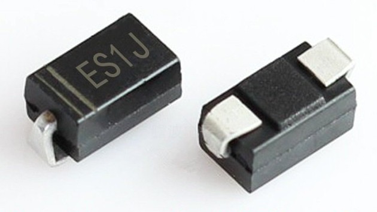
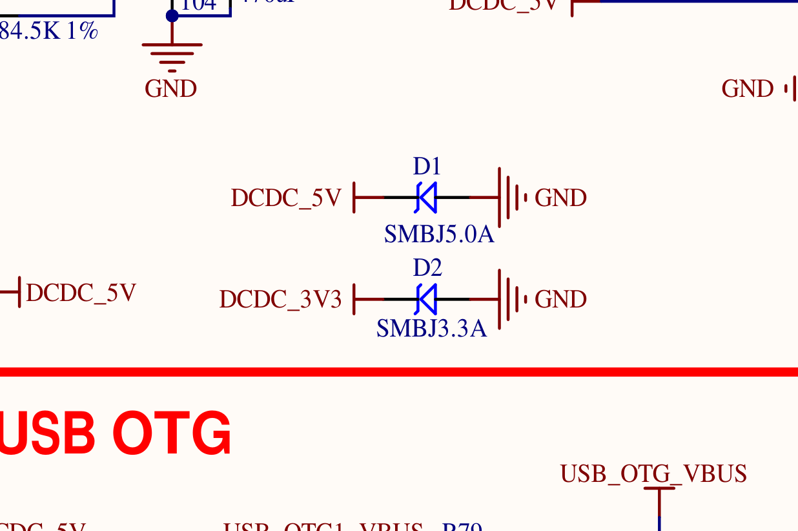

二极管与 TVS：封装、丝印、极性、选型五步
第 1.6 章讲「谁是谁、物理怎么来的」，这一章讲「拿到一颗黑方块，怎么认出它、怎么判断它能不能用」。同样 SMB 封装，一颗是 5V TVS、一颗是 30V 肖特基，外观几乎一致；丝印只有两三字符，读错就焊错，焊错就短路。识别 → 读参数 → 对工作点 → 验热量 → 留余量，五步走完才算选对。

读完这一章，你应该能
- 从封装（SOD-323/SMA/SMB/SMC）判断一颗二极管的大致功率等级
- 读懂丝印（SS34、ES1J、MBR0520、SMBJ5.0A）并判断类型与极性
- 用 Vf–If 曲线算实际压降与损耗，而不是套 0.7V
- 按「VRWM > 工作电压、VC < 后级绝对最大」选 TVS，并核算 IPP
- 用万用表二极管档在路判断开路/短路/漏电
2.4.1封装：先看体型，估功率
| 封装 | 尺寸量级 | 典型 IF | 典型 PPP（TVS，10/1000µs） |
|---|---|---|---|
| SOD-323 | 1.7×1.25mm | 0.2–0.5A | —（太小，不做 TVS） |
| SOD-123 | 2.7×1.6mm | 0.5–1A | — |
| SMA（DO-214AC） | 4.3×2.6mm | 1–2A | 400W 级 |
| SMB（DO-214AA） | 5.3×3.6mm | 2–3A | 600W 级（本板 D1/D2） |
| SMC（DO-214AB） | 7.0×6.0mm | 3–5A | 1500W 级 |
封装决定散热面积，散热面积决定能吃多少浪涌。TVS 的 400W/600W 不是持续功率，而是 10/1000µs 单脉冲峰值；连续功耗只有 1–5W（且要靠焊盘散热）。很多人把「600W」当成可以长期扛 600W，结果第一次上电就炸。
2.4.2丝印与极性：三个字符里全是信息
| 丝印 | 类型 | 关键参数 | 本板位置 |
|---|---|---|---|
| SS34 | 肖特基 3A/40V | VF≈0.5V@3A，IR 大 | DC_IN1 防反接 |
| MBR0520 | 肖特基 0.5A/20V | VF≈0.4V@0.5A | RS485 侧 D6 |
| ES1J | 超快恢复 1A/600V | trr≈35ns | （同族器件，作对照） |
| SMBJ5.0A | TVS 单向 5V | VRWM=5V，VC≈9.2V@IPP | D1，DCDC_5V 轨 |
| SMBJ3.3A | TVS 单向 3.3V | VRWM=3.3V，VC≈7.3V | D2，DCDC_3V3 轨 |
| BAT43WS | 肖特基 0.2A/30V | VF≈0.35V，用于信号级 | D4，USB 供电切换 |
命名规则：SMBJ 后面的数字是 VRWM（反向工作电压），字母 A = 单向、CA = 双向。所以 SMBJ5.0A 是「5V 单向」，不是「5V 双向」。双向 TVS 用于交流/差分线（如 RS485 A/B 对地、以太网差分），单向用于直流轨。
极性判断：色带/竖线一端是阴极。单向 TVS 的阴极接正电源、阳极接地——这样正常工作时它反偏不导通，浪涌来时反向击穿钳位。焊反了等于把电源直接短路到地，上电即炸。

新窗口打开2.4.3正向工作点：Vf 是电流与温度的函数
规格书写 Vf=0.45V，通常注明「@IF=1A、25°C」。真实电路里电流不一定是 1A、温度不一定是 25°C，所以：
- 压降按实际电流查曲线：肖特基在 100mA 时可能只有 0.3V；
- 温度升高 Vf 下降（硅约 −2mV/°C，肖特基类似），冷启动时压降更大；
- 损耗按平均值算：P=Vf(I)·I，不是峰值。
算例：D6（MBR0520）在 RS485 支路，正常 50mA：Vf≈0.35V，P=17.5mW，可忽略。若换到 SS34 走 1A：Vf≈0.5V，P=0.5W——SMA 封装热阻约 100°C/W，温升 50°C，必须重新评估。
反向漏电是肖特基的软肋：25°C 时 10µA，85°C 可能 100µA 以上（每升 10°C 约翻倍）。在「电池待机」「高阻采样」里，一颗肖特基就能吃掉整个微安预算。这类场合要换「理想二极管」控制器 + MOS。
2.4.4TVS 选型：四个参数互相约束
| 参数 | 含义 | 约束 |
|---|---|---|
| VRWM | 反向工作电压（不导通的上限） | > 本轨最高电压（含纹波/瞬态） |
| VBR | 击穿电压（开始导通的区间） | VBR≈1.1–1.2×VRWM，要 < 后级绝对最大 |
| VC | 钳位电压（在 IPP 下的残压） | 必须 < 后级器件的绝对最大电压 |
| IPP | 峰值脉冲电流（10/1000µs） | > 预期浪涌电流 |
| Cj | 结电容（几百 pF–几 nF） | 高速信号线上会拖慢边沿 |
最容易被忽略的是 VC。以 SMBJ5.0A 为例：VRWM=5V，VBR≈6.4–7V，VC≈9.2V@IPP=65A。也就是说「5V 的 TVS」在浪涌时会把电压钳到 9.2V——后级若是一颗绝对最大 6V 的芯片，它照样会死。
选型顺序因此是：先定后级能承受多少 → 再选 VC 低于它 → 再确认 VRWM 高于本轨 → 最后核 IPP。顺序反了就会选出「看着对、实际保不住」的器件。
算例：本板 5V 轨给 USB Host 供电，USB 器件耐压常见 6V（绝对最大）。SMBJ5.0A 的 VC=9.2V > 6V——所以 TVS 保的是「板子不被浪涌打穿」，不是「后级绝不受损」。要真正保护后级，得加二级保护（电阻/电感 + 更低钳位的 TVS 或 ES 管）。这是工程现实：一级 TVS 只负责把 kV 级浪涌削到 10V 级。
2.4.5LED：从规格书挑，而不是「找个亮的」
LED 的关键不是「电压」，而是亮度与颜色的一致性。规格书给四个 bin：
- Vf bin：同批 LED 的 Vf 分档（如 2.9–3.1V），影响限流电阻计算；
- 波长 bin：颜色分档（如 465–470nm），混批会出现「同一批板子颜色不一样」；
- 亮度 bin（Iv）：同样电流下的光强分档；
- 视角：120° 贴片 vs 30° 直插，决定是否需要导光柱。
本板 PWR 指示灯是蓝光 LED + R8 1K。蓝光 Vf≈3.0V，在 3.3V 下电流 (3.3−3)/1k=0.3mA——很暗但省电。若换成红光（Vf≈1.9V），同样 1K 会给 1.4mA，亮度差 4 倍多。这就是「换颜色必须重算电阻」的原因。
2.4.6在路实测：二极管档的三个读数
- 正向 0.3–0.7V：正常（肖特基偏低、硅管偏高）。读数随表笔极性变化，说明是二极管不是电阻。
- 两个方向都 OL（开路）：断路，或表笔电压不足以导通（部分万用表只有 1V 档，测蓝光 LED 会误判 OL）。
- 两个方向都接近 0：击穿短路，最常见于 TVS 被打穿后。
在路测量要小心并联路径：二极管两端若并着低阻电阻/电感，读数会被拉偏。判据是「与另一颗同型号对比」，而不是绝对读数。
五个坑
① 3.3V 轨用 SMBJ5.0A「更保险」：正常 5V 不击穿，但钳位 9.2V 对 3.3V 器件毫无意义。
② 焊反单向 TVS：阴极接地，上电即短路。
③ 把 600W 当持续功率：连续只允许 1–5W。
④ 只看 VC 不看 IPP：浪涌电流超过额定，TVS 自身炸裂。
⑤ 换 LED 颜色不重算电阻：蓝换红，电流翻 4 倍。